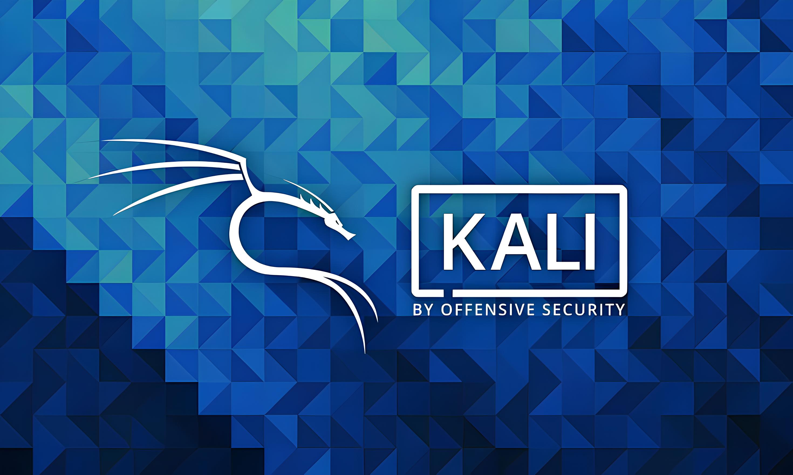
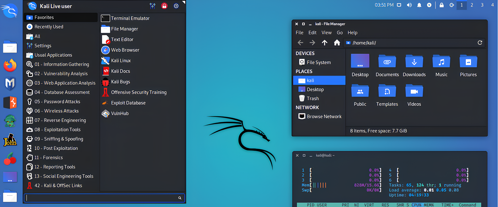
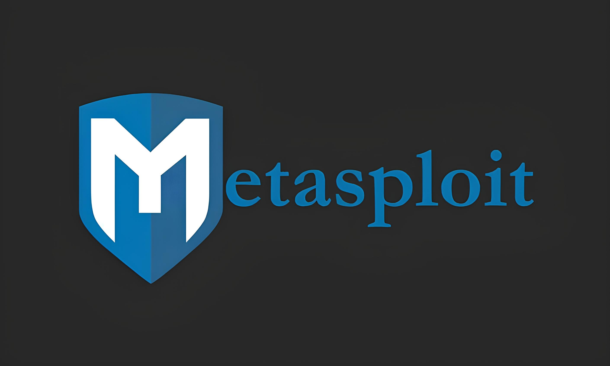
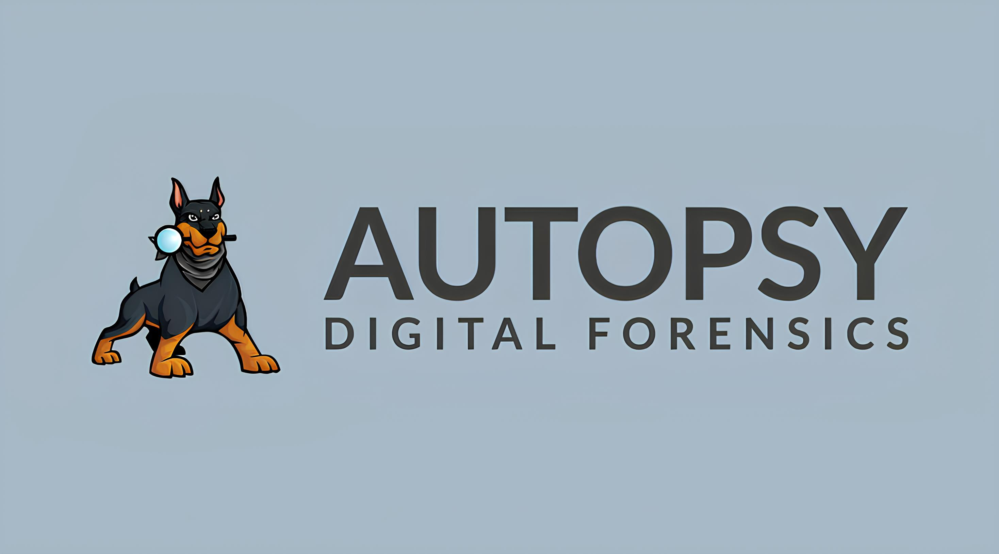

Sejarah

Kali Linux dikembangkan oleh Offensive Security sebagai penerus dari BackTrack Linux. Kali pertama kali dirilis pada tahun 2013 dan dirancang khusus untuk pengujian penetrasi dan forensik digital.
Kali Linux memiliki lebih dari 600 alat keamanan yang telah dikurasi dan diperbarui secara berkala. Sistem ini berbasis Debian dan mendukung berbagai arsitektur perangkat keras.
Fitur

Kali Linux menyediakan berbagai alat untuk pengujian keamanan, termasuk pemindaian jaringan, eksploitasi kerentanan, analisis forensik, dan pengujian aplikasi web.
Selain itu, Kali mendukung berbagai mode operasi, seperti Live USB, dual-boot, dan virtualisasi untuk kenyamanan pengguna dalam melakukan pengujian keamanan tanpa mengubah sistem utama.
Penggunaan
Kali Linux digunakan oleh profesional keamanan siber, peneliti keamanan, dan etikal hacker untuk mengidentifikasi dan memperbaiki celah keamanan dalam sistem komputer.
Pengujian Penetrasi

Kali Linux dilengkapi dengan alat seperti Metasploit, Nmap, dan Wireshark yang digunakan untuk menguji kerentanan dalam sistem komputer dan jaringan.
Forensik Digital

Kali Linux juga memiliki alat seperti Autopsy dan Foremost yang berguna dalam investigasi keamanan dan pemulihan data dari perangkat yang terhapus atau rusak.